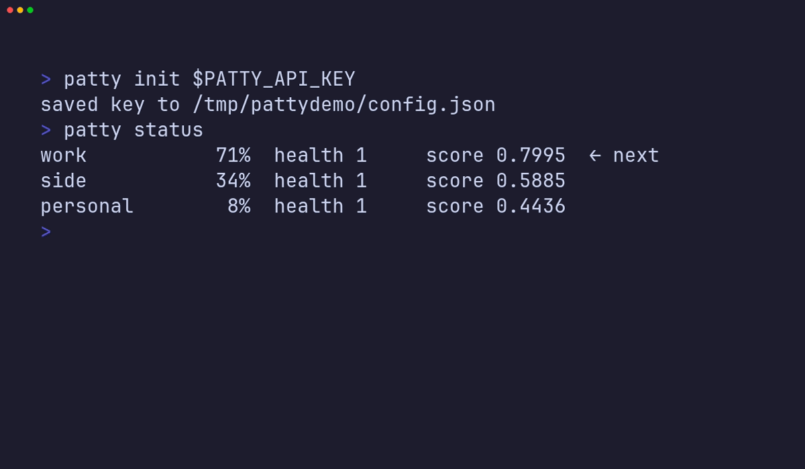
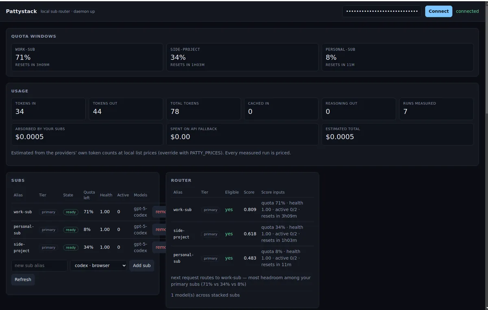

Stop hitting the limit
on one plan
If you pay for more than one ChatGPT or Codex plan, you can only use one at a time. Pattystack signs into all of them and sends every request to whichever has the most left — through a single OpenAI-compatible URL.
Free and open source. Runs on your own machine.
npx @puffle/pattystack
Needs Node 22+. Opens a console at 127.0.0.1:3210.

Why you'd want this
You already paid for the quota
A personal plan, a work seat, one for a side project. Three bills, and you still get rate-limited on whichever one you happen to be signed into. Pattystack uses all of them.
No more logging in and out
Your editor, your agent, your scripts all point at one URL and one key. Which account actually serves the request is Pattystack's problem, not yours.
It doesn't just fail at the cap
When a plan is throttled it moves to the next one. When every plan is spent it can fall back to pay-as-you-go API credit, so you get an answer instead of an error.
You can see what you're burning
A local console shows tokens per plan, what your subscriptions absorbed for free, and what the paid fallback actually cost you in dollars.
How it works
-
1
Start it on your machine. One command. It listens on
127.0.0.1:3210, an address that never leaves the computer it runs on, and prints a key. -
2
Add your plans. Sign each ChatGPT or Codex account in once from the console. Add an OpenAI-compatible API key too if you want a paid spare tyre.
-
3
Point your tools at it. Anything that speaks the OpenAI API — Cursor, the SDKs, your own code — just needs the URL and the key. Pattystack picks the account per request.
Try it without signing anything in
Add --fake and it makes up plans that behave like real ones, so you can watch it choose between them first.
- • Runs a local daemon on http://127.0.0.1:3210
- • Prints a one-time API key; connect in the browser console
- • Point Cursor, Codex, or the OpenAI SDK at the same URL
Install @puffle/pattystack from npm, start it with a fake sub, and verify a POST to /v1/chat/completions on 127.0.0.1:3210 returns 200. Then stop the daemon and tell me the next step.
OpenAI-compatible clients
Pattystack supports any client that can set a custom baseURL and apiKey.
FAQ
What actually is it?
How is this different from the official OpenAI API?
Does it work with Claude Code / Cursor?
http://127.0.0.1:3210/v1 and use the API key printed at startup.
Is this against OpenAI's terms of service?
Is my data private?
127.0.0.1, an address that never leaves the machine it runs on — not your phone on the same wifi, not anyone on the internet. Your prompts go to the AI provider you chose and nowhere else. There is no Pattystack server.
What can I plug into it?
The console
Everything it knows, on your own machine: how much each plan has left, what the tokens cost, and why it picked the plan it picked.

Or skip it entirely — patty status, patty usage and patty accounts do the same from the terminal.